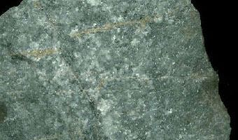
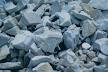
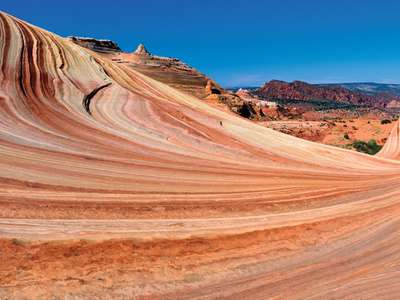
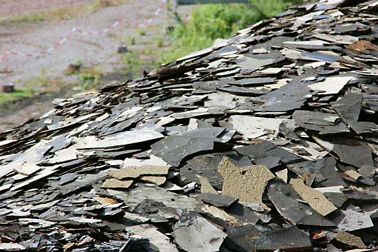
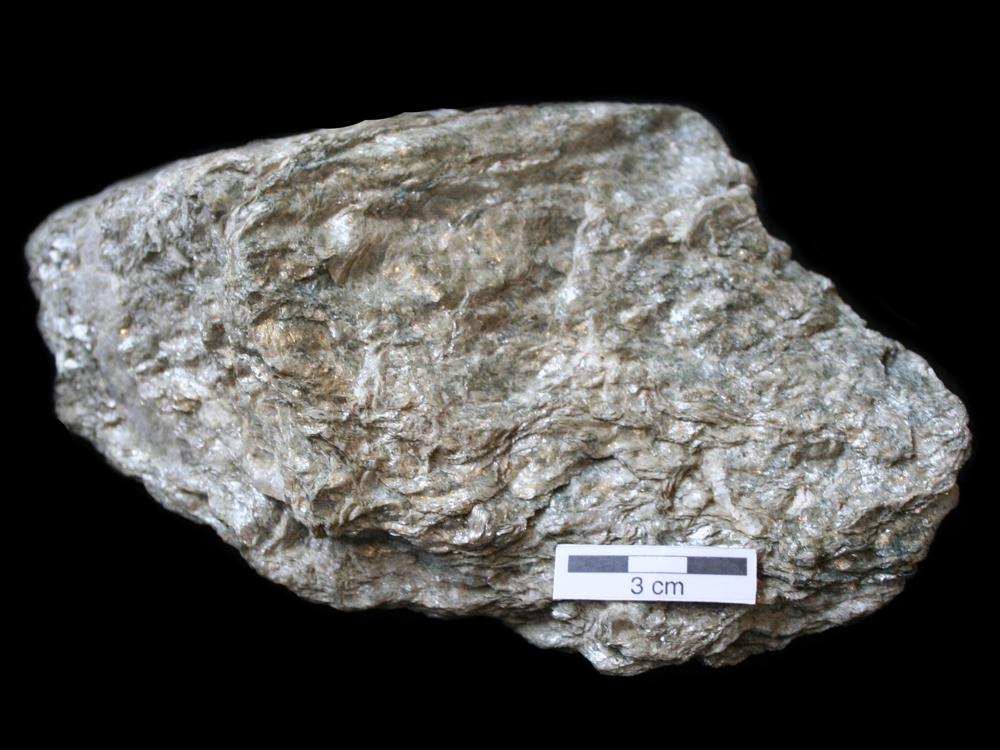
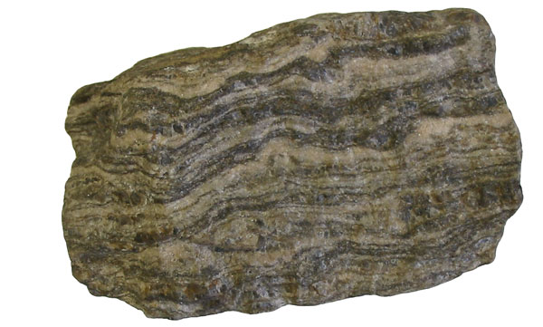

The Rock Cycle
The rock cycle is a series of processes that create and transform the types of rocks in Earth’s crust.for more information (nationalgeographic).
There are three kinds of rock: igneous, sedimentary, and metamorphic.
rock
Home
Science
Earth Science, Geologic Time & Fossils
Earth Sciences
rock
geology
BY Robert S. Carmichael | See All Contributors | View Edit History
TOP QUESTIONS
What are the types of geologic rocks?
What are igneous rocks?
What are sedimentary rocks?
What are metamorphic rocks?
What is a rock cycle?
rock, in geology, naturally occurring and coherent aggregate of one or more minerals. Such aggregates constitute the basic unit of which the solid Earth is composed and typically form recognizable and mappable volumes. Rocks are commonly divided into three major classes according to the processes that resulted in their formation. These classes are (1) igneous rocks, which have solidified from molten material called magma; (2) sedimentary rocks, those consisting of fragments derived from preexisting rocks or of materials precipitated from solutions; and (3) metamorphic rocks, which have been derived from either igneous or sedimentary rocks under conditions that caused changes in mineralogical composition, texture, and internal structure. These three classes, in turn, are subdivided into numerous groups and types on the basis of various factors, the most important of which are chemical, mineralogical, and textural attributes
Types of a Rocks
Igneous Rocks
Sedimentary Rocks
Metamorphic Rocks
Igneous Rocks
Igneous are formed from melted rock deep inside the Earth.
Igneous rock, or magmatic rock, is one of the three main rock types, the others being sedimentary and metamorphic. Igneous rock is formed through the cooling and solidification of magma or lava. The magma can be derived from partial melts of existing rocks in either a planet's mantle or crust.
Characreristics of Igneous Rocks
They can be either glassy or coarse
These usually do not react with acids
The mineral deposits are available in the form of patches with different sizes.
Basalt is a fine-grained, dark-colored extrusive igneous rock composed mainly of plagioclase and pyroxene. The specimen shown is about two inches (five centimeters) across.
Andesite
Andesite is a fine-grained, extrusive igneous rock composed mainly of plagioclase with other minerals such as hornblende, pyroxene, and biotite. The specimen shown is about two inches (five centimeters) across
Dacite

Dacite is a fine-grained, extrusive igneous rock that is usually light in color. It has a composition that is intermediate between rhyolite and andesite. The specimen shown is about four inches (ten centimeters) across.
are formed from layers of sand, silt, dead plants, and animal skeletons.
Sedimentary rocks are types of rock that are formed by the accumulation or deposition of mineral or organic particles at Earth's surface, followed by cementation. Sedimentation is the collective name for processes that cause these particles to settle in place.Wikipedia
Characreristics Of Sedimentary Rock
Soft
Have Many Layers as they are formed due to the deposition of sediments.For more information(topperlearning.com)
Example Of Sedimentary Rock
Limestone

Limestone and dolostone make up the majority of carbonate rocks. Carbonate Rocks. algal limestone; bafflestone; beachrock; biocalcarenite; biomicrite ...
Sandstone

Muddy sandstones with abundant (>10%) muddy matrix are called wackes. Six sandstone names are possible using the descriptors for grain composition (quartz-, ...
Shale

shale. Noun. type of sedimentary rock. stalactite. Noun. rock formed by mineral-rich water dripping from the roof of a cave.
formed from other rocks that are changed by heat and pressure underground.
Metamorphic rocks arise from the transformation of existing rock to new types of rock, in a process called metamorphism. The original rock is subjected to temperatures greater than 150 to 200 °C and, often, elevated pressure of 100 megapascals or more, causing profound physical or chemical changes.Wikipedia
Slate is a fine-grained metamorphic rock that exhibits a foliation called slaty cleavage that is the flat orientation of the small platy crystals of mica ...
Schist

Some examples of metamorphic rocks are gneiss, slate, marble, schist, and quartzite. Slate and quartzite tiles are used in building construction.
Gneiss

A picture gallery of metamorphic rocks including amphibolite, gneiss, hornfels, marble, novaculite, phyllite, quartzite, schist, skarn, slate and soapstone.